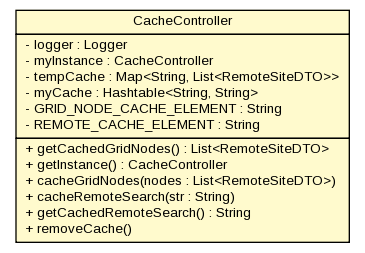

gov.nih.nci.ncia.cache
Class CacheController

java.lang.Object
 gov.nih.nci.ncia.cache.CacheController
gov.nih.nci.ncia.cache.CacheController
public class CacheController
- extends java.lang.Object
- Since:
- NCIA ver 2.1.1
|
Constructor Summary |
private |
CacheController()
Make this a singleton instance |
| Methods inherited from class java.lang.Object |
clone, equals, finalize, getClass, hashCode, notify, notifyAll, toString, wait, wait, wait |
logger
private static org.apache.log4j.Logger logger
myInstance
private static CacheController myInstance
tempCache
private static java.util.Map<java.lang.String,java.util.List<RemoteSiteDTO>> tempCache
myCache
private static java.util.Hashtable<java.lang.String,java.lang.String> myCache
GRID_NODE_CACHE_ELEMENT
private static final java.lang.String GRID_NODE_CACHE_ELEMENT
- See Also:
- Constant Field Values
REMOTE_CACHE_ELEMENT
private static final java.lang.String REMOTE_CACHE_ELEMENT
- See Also:
- Constant Field Values
CacheController
private CacheController()
- Make this a singleton instance
getCachedGridNodes
public java.util.List<RemoteSiteDTO> getCachedGridNodes()
getInstance
public static CacheController getInstance()
cacheGridNodes
public void cacheGridNodes(java.util.List<RemoteSiteDTO> nodes)
cacheRemoteSearch
public void cacheRemoteSearch(java.lang.String str)
getCachedRemoteSearch
public java.lang.String getCachedRemoteSearch()
removeCache
public void removeCache()